相聚的开始
7月的夜晚，因为一场关于连接、分享与创造的相聚而格外有温度。作为 CBD 半年公益之旅中的一次线下聚会，由 CBD 发起的 WAIC AfterParty Night 在两天时间内完成了双城联办的筹备与落地。大家从不同城市、不同岗位、不同背景来到这里，在轻松而真诚的氛围里，围绕 AI、产品、公益、成长与合作展开了一场充满能量的交流。
与其追逐标签，不如创造真实的价值；与其停留在线上，不如在线下相见。在 AI 时代加速到来的当下，这样一场面对面的相聚，也让我们更加坚定了一件事：人与人之间真实的连接，依然是最珍贵、最不可替代的部分。也正因如此，这场活动不只是一次线下聚会，更像是社区半年公益行动中的一次重要线下节点。
从活动开始前，现场就已经悄悄进入了“准备就绪”的节奏。为了让每一位到场的朋友都能拥有更好的体验，主办方在短时间内完成了策划、场地确认、海报与网站扫码物料准备，也为到场嘉宾定制了线下纸质社交名片。每一份细节都在传递一种态度：这不只是一次普通的聚会，更是一场被认真对待、被用心打磨的相遇。
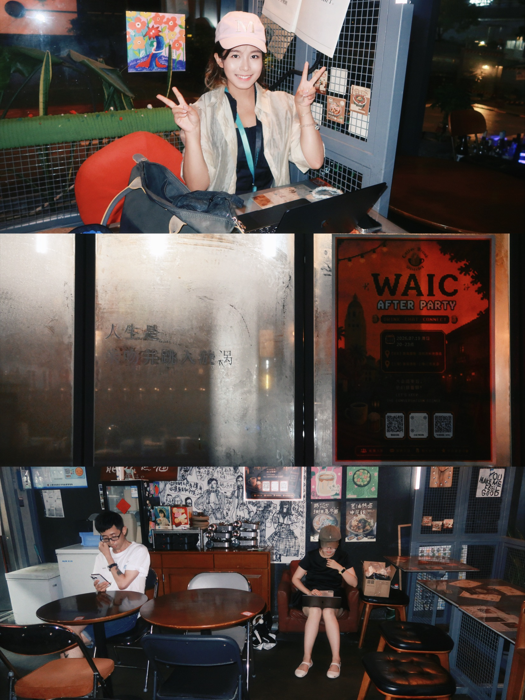
随着来宾陆续签到入场，现场氛围也渐渐热络起来。大家领取专属名片、拍照留念、相互问候，在咖啡与交谈之间慢慢打破初见的拘谨。许多朋友第一次来到 Coffee Break District，也第一次在线下见到曾经只在社交平台上互动过的人。陌生感在一个个微笑和一句句自我介绍中迅速消散，取而代之的是一种“终于见面了”的熟悉和兴奋。
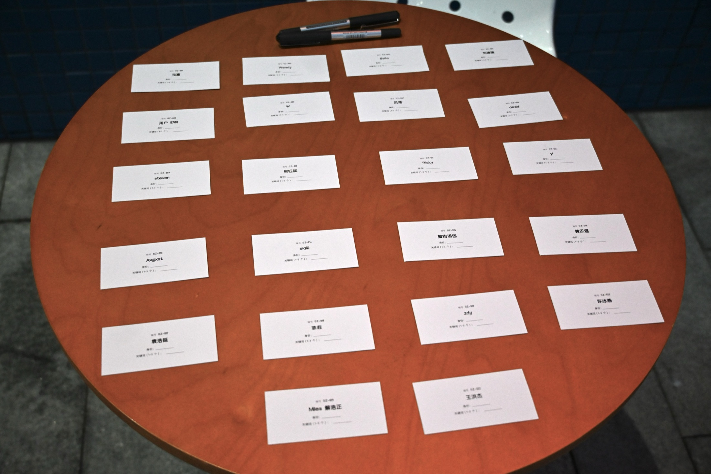
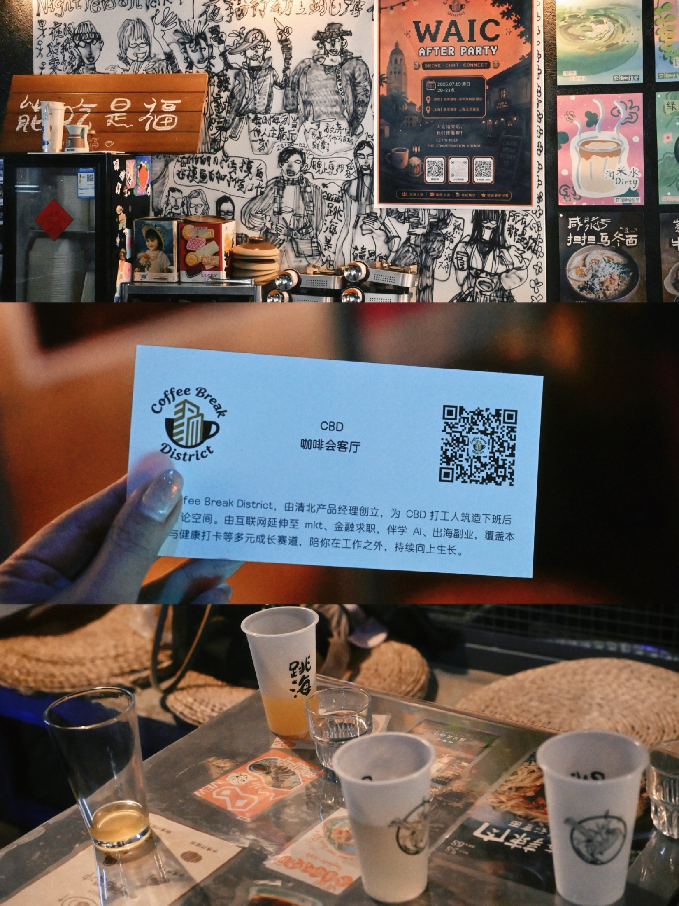
多元的参与者
这场相聚也确实汇聚了非常多元的岗位与身份背景。参与者中既有产品伙伴，也有电商运营、商家业务运营、海外运营伙伴，同时还有内容设计与本地化、算法、数据科学、大前端、Agent 基础设施，以及销售相关岗位的伙伴加入。除了来自不同业务线的职场伙伴，现场也有专程赶来的创业者、智能硬件投资专家、拥有十年经验的商业化从业者，以及来自大厂的战略负责人、区域负责人和高校国际学生共同参与。也正因为大家来自不同业务线、不同城市、不同工作语境，也拥有不同的人生阶段与观察视角，这场活动里的每一次对话，才更容易碰撞出跨领域的灵感和新的合作可能。
内容分享与开放表达
在正式分享环节中，CBD Sharing 首先带大家重新认识了这场活动背后的发起初衷。围绕 “Who’s Ember?”、“What’s CBD?”、“Why WAIC?” 这几个问题，现场讲述了社区成立的背景、连接的愿景，以及为什么要借 WAIC 的契机，把更多有趣的人和有价值的话题汇聚到一起。答案其实很简单，也很有力量：面向未来，面向下一步，去连接更多愿意思考、愿意行动的人。
随后的嘉宾分享，把整场活动推向了更深入的思考。现场讨论了公益如何借助 AI 讲好故事，也分享了如何从想法出发做出自己的小产品，以及关于 PM 破界成长和个人迭代的真实经验。这些内容并不是高高在上的“标准答案”，而是来自真实经历中的观察、复盘与提炼。正因如此，大家更容易在其中看到自己，也更容易从别人的路径中获得启发。
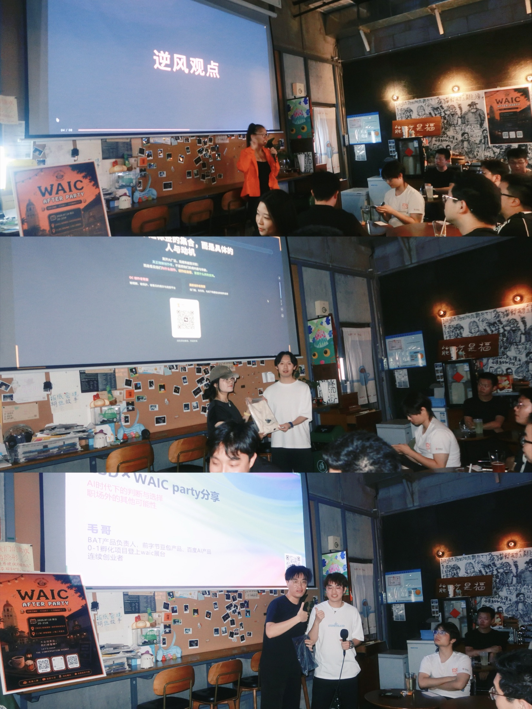
开放麦环节则让这场活动真正“活”了起来。第一位站上台的是大三学生，也有创业者现场进行自己的 Pitch，还有路过看到活动信息后临时加入讨论的朋友。不同身份、不同经历的人在这里拥有同样的表达机会，台上的分享不再只是输出观点，更像是一种邀请：把你的问题、你的想法、你的故事带出来，和大家一起碰撞、一起延展。
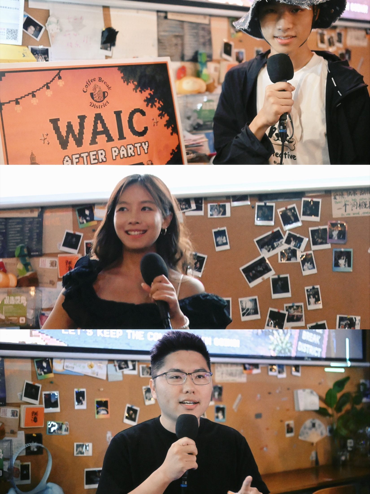
交流与连接
除了台上的表达，台下的交流同样精彩。自由社交与 Networking 环节里，大家围绕产品、投资、嘉宾资源、合作机会以及更多开放议题展开对话。活动筹备过程中，团队还快速搭建了报名网站，并设置了互动匹配功能，帮助参与者在到场之前就初步找到同好，也让这场相聚真正完成了从线上到线下的延展。有人找到志同道合的伙伴，有人收获了新的视角，也有人在一次不经意的聊天中打开了新的合作可能。很多时候，真正打动人的不是活动本身有多热闹，而是你在其中遇见了谁，又带走了什么。
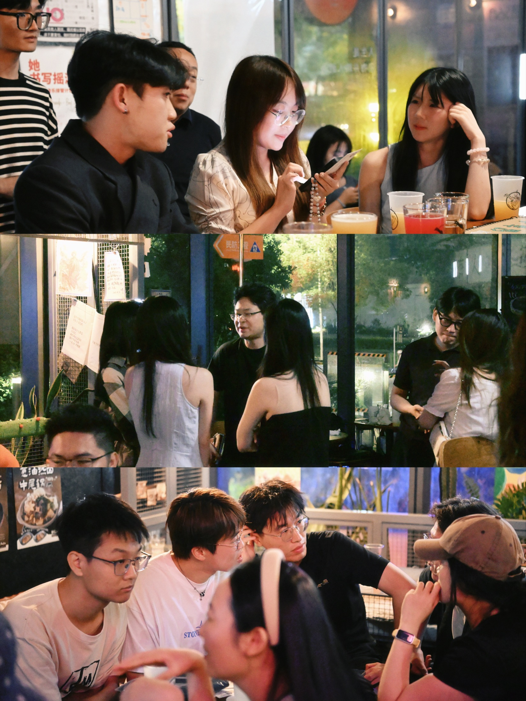
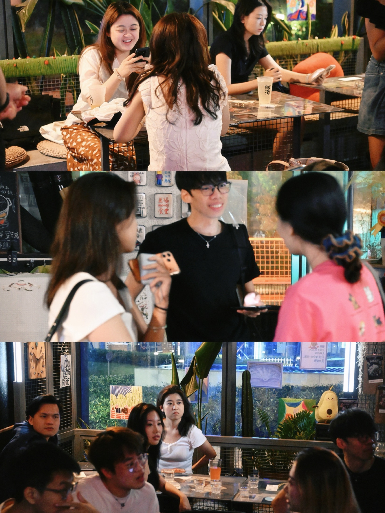
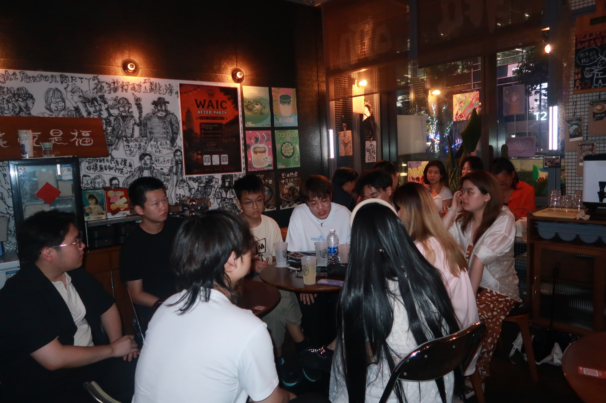
尤其当产品、运营、设计、算法、销售与基础设施等不同岗位的人真正坐到一张桌子前时，交流的价值会被进一步放大。有人更关注行业趋势和业务机会，有人关心用户体验与产品落地，也有人从技术实现、增长路径和生态协同的角度提出自己的看法。正是这种跨岗位、跨视角的自然流动，让原本一场主题聚会，逐渐变成了一次更有深度的认知交换和资源连接。
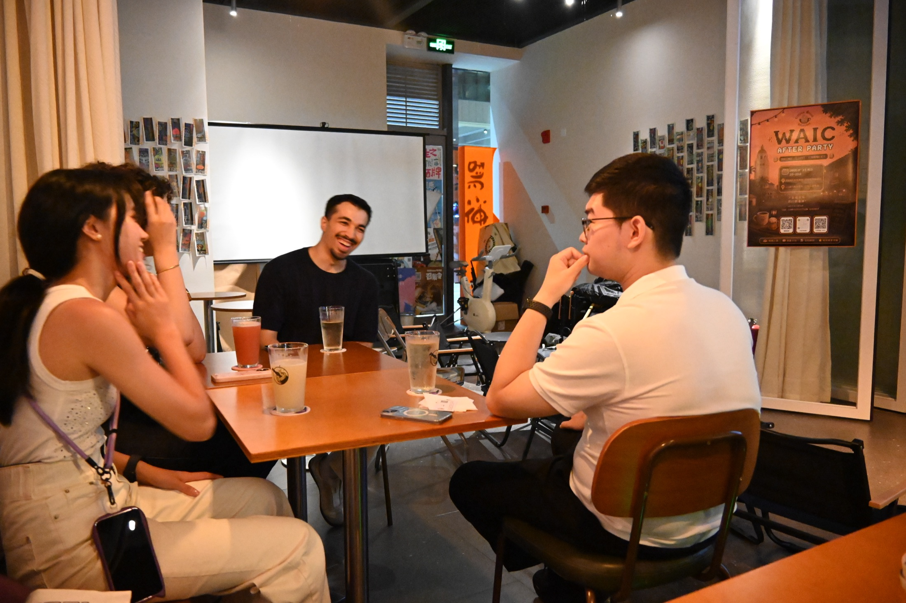
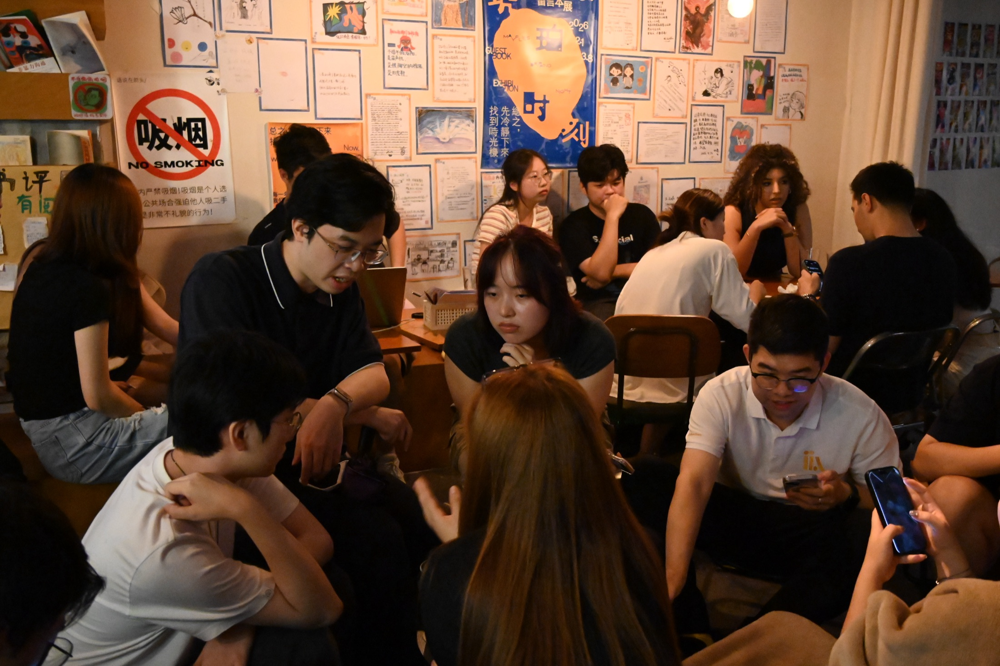
双城联动与现场记忆
值得一提的是，这场活动并不只是单点发生的线下聚会，它还承载了一次跨城市的联动。上海现场与异地伙伴同步连接，也有外国友人加入交流，让原本属于一个夜晚、一个空间的活动，延展出了更多元的视野与更开放的气质。连接不再只是口号，而是在一次次连线、一次次对话中，被真实地发生。
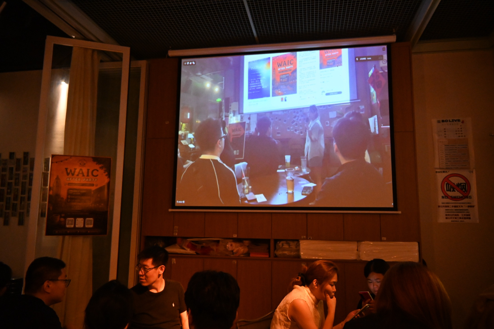
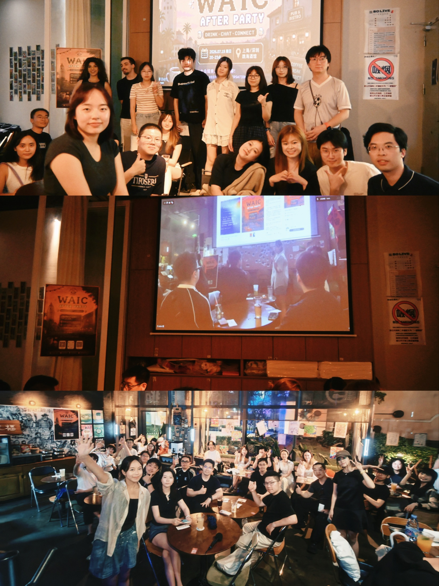
从现场的照片可以看到，大家或站在海报前合影，或拿着专属卡片记录这个夜晚，或在分享结束后继续围坐交流。那些举起的手、热烈的掌声、认真倾听的目光、结束后仍意犹未尽的讨论，都让这场活动拥有了超越流程本身的意义。它记录的不是某一个单独的环节，而是一群人因为共同的兴趣和信念，在同一个夜晚里彼此看见、彼此启发的过程。
活动亮点摘要
- 双城联办。 本次 WAIC AfterParty Night 在较短时间内完成上海、深圳双城联办的筹备与落地，体现出较强的组织执行力与活动推进效率。
- 人群多元。 到场参与者覆盖创业者、智能硬件投资专家、拥有十年经验的商业化从业者，以及来自大厂的战略负责人、区域负责人和高校国际学生等群体，展现出较强的跨行业交流特征。
- 机制完善。 活动通过快速搭建的报名网站与互动匹配功能，帮助参与者在到场前初步建立连接，为现场交流提供了更明确的社交起点。
- 连接延展。 现场围绕产品、投资、合作与成长等议题展开交流，形成了跨岗位、跨城市的真实连接场景，也为后续持续互动与合作延展提供了基础。
写在最后
回过头来看，这场 WAIC AfterParty Night 更像是 CBD 半年公益之旅中的一次重要线下注脚。它让社区的连接从线上延伸到线下，让内容分享走向真实互动，也让“价值”这件事，有了更具体、更可感知的落点。我们相信，真正有生命力的社区，不只是组织活动，而是持续创造让人愿意回来、愿意参与、愿意共同建设的空间。
感谢每一位到场的朋友，感谢每一位愿意发言、倾听、回应和记录的人。正是因为大家的出现，这个夜晚才不仅仅属于活动本身，也属于每一次真诚的表达、每一次主动的靠近、每一次连接发生的瞬间。
这一晚，我们不只是在为 WAIC 举杯，也是在为新的相遇、新的可能和新的开始举杯。期待下一次，再见面时，我们都已经带着新的故事而来。
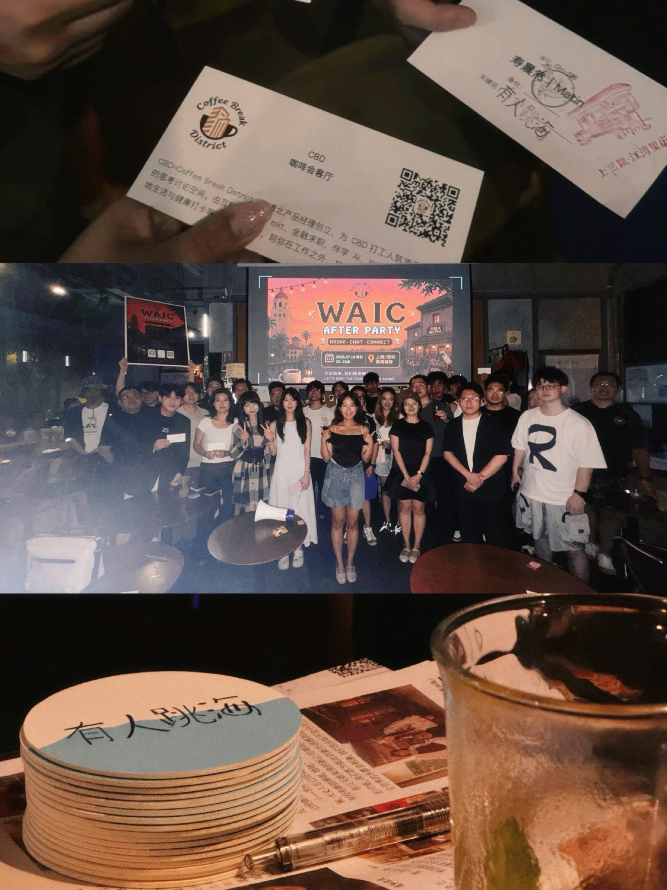